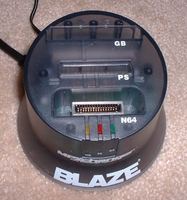
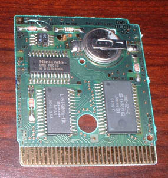
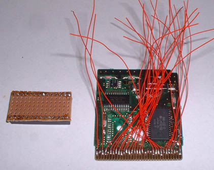
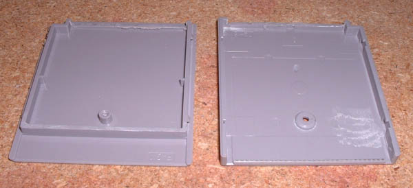
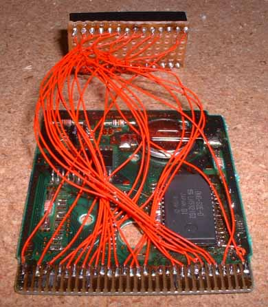
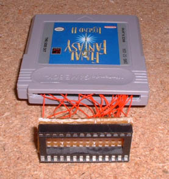
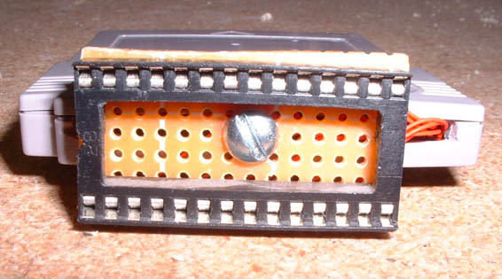
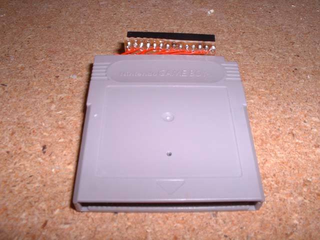
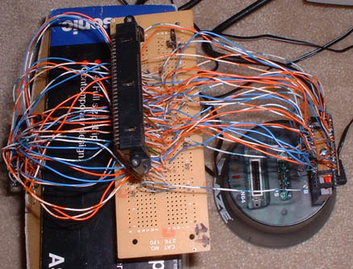
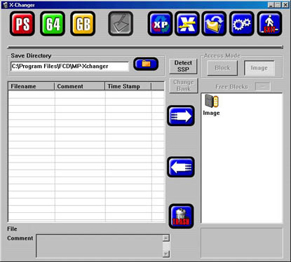

Reading / Writing SRAM
Here's a little how-to for converting a GB memory reader / writer to VB. Although this should work for all GB memory readers, I have only tested it with the Blaze MPXchanger. I got it for $10 at Electronics Boutique, and they had a lot of them that they were closing out, so you should go pick one up soon before they're all sold out! You should also know that the software doesn't support Windows 2000, and I couldn't find a new version that does support Windows 2000, so make sure you have access to a Win 9x computer (I haven't tested it in Windows XP with the compatibility mode, so it may work with that, or possibly in a Win 9x emulator (Wine, Virtual PC, etc.)

The cart read/writer, no modifications are done to this, so you can still use it for all the other uses too!

Then you need a gameboy cart with SRAM. I used Final Fantasy Legend II. You want to use an old game, not a new one (like the GB Color enhanced ones) with SRAM because the newer ones have 256kbit SRAM, and to make it easier, you should get one with 64kbit SRAM (like the VB has). I know for sure that Final Fantasy Legend II and Legend of Zelda Link's Awakening have 64kbit sram, but the Legend of Zelda Link's Awakening DX (GBC enhanced) has 256kbit.

Then you will need to remove the existing SRAM chip on the GB cart, get a 28 pin DIP socket, and solder wires to the GB edge pins (or directly to the SRAM pins if you want to make it harder on yourself ;-) ) You need to solder wires to every pin on the edge except: 2,5,19,20,21,30,31. Then you need to solder one wire to pin 20 on the SRAM connector. Make sure when soldering to the GB edge connector pins that you solder only to the very top of the pin, and don't get solder globs down lower on the pins because that is the connector for the cart too. Also note, you can not remove the ROM from the cart, if you do that, the MPXchanger won't recognize that there is a GB cart in it (although other read/writers may allow it, it doesn't hurt anything being there).

Then you need to cut a hole in the end of the case so the wires can stick out, and trim down the plastic piece that goes over the GB connector to accomadate for the wires being soldered there so the case doesn't bulge (but don't cut too much or the board might become kind of loose in the case).

Then you need to connect all the wires from the board to the socket as shown in this file.

Then you should stick it all in the case and see how it fits.

Then I drilled a hole in the board and stuck a screw into it so it would at least hold it in fairly well so there wouldn't be stress on the wires.

And here's the finished adapter w/ the sticker peeled off.

Here it is all connected through the dumper (which needs to be slightly modified (as shown in this file) to work for SRAM).

Then you run the software, click GB, then left arrow reads the cart, right arrow writes the cart. The format it saves it in is it's own header for the first 192 bytes, then the actual SRAM dump starts at address 0xC0. I have sent an SRAM dump from Reality Boy and it worked with no problems on the actual VB.
{kind=link}